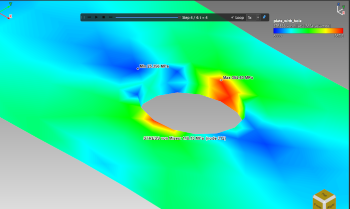
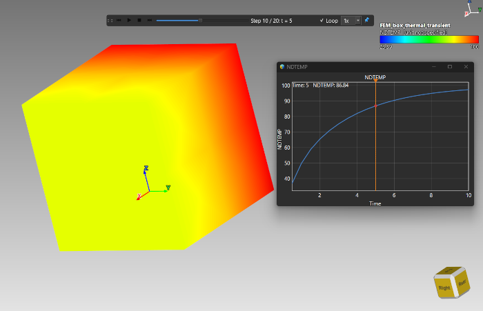
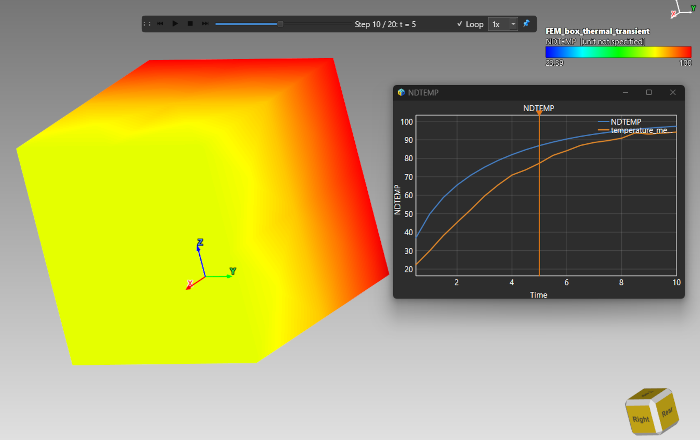
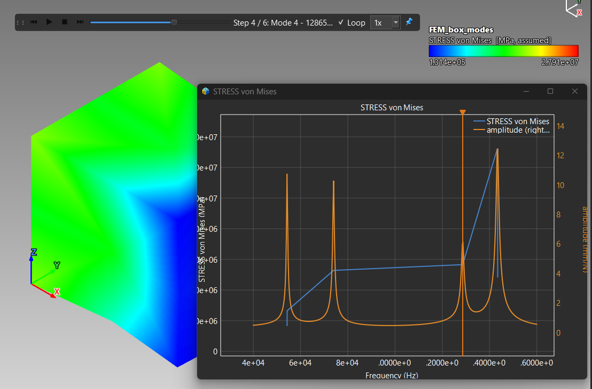
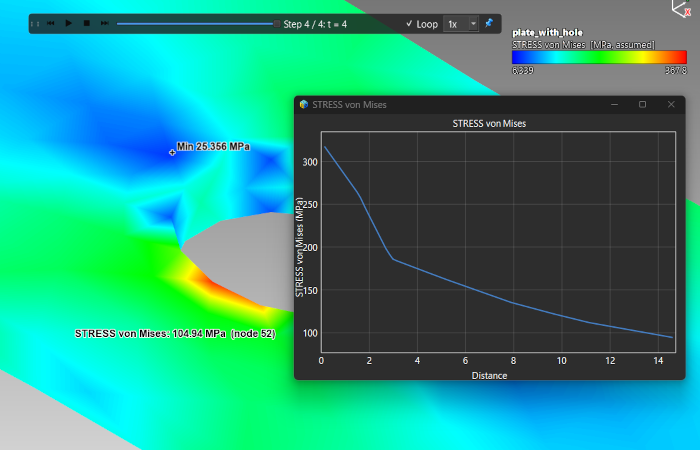
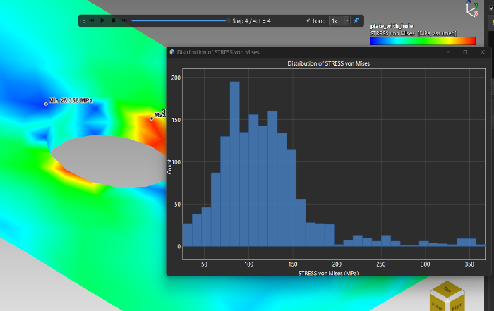

Lesson 21: Charts and Probing
Introduction
Colours tell you where a value is high or low; a chart tells you how much. This lesson reads values straight from the model, plots them over time, along a line and as a distribution, and compares a result with your own measured data.
sample-models/Simulation): FEM_box_thermal_transient.frd, thermal_probe_test.csv, FEM_box_modes.frd, FEM_box_modes_frf.csv, plate_with_hole.frd.
Reading a Value
Open plate_with_hole.frd and simply move the mouse over the plate: the value of the shown field at the cursor appears next to it, in the unit you set in Lesson 19.

The value under the cursor, read directly from the platePlot Over Time
FEM_box_thermal_transient.frd and rotate until you can see the face opposite the heated one.
A Plot Over Time chart with its orange cursorComparing Several Points
Right-click the chart and choose Add a point from the model, then click another point on the same result: its history joins the chart as another curve, named by its position, with a legend.
Adding Your Own Data
A chart can carry measured data next to the simulated curve. The CSV needs two columns, x then y, and a header row that names the curve. A header like Name (unit) gives the curve a unit; a curve whose unit differs from the main one (a temperature next to a stress) is drawn against a second axis on the right.
thermal_probe_test.csv - synthetic thermocouple readings for the middle of the far face.
The simulated history and the measured readings on one chartFrequency Response and Modes
For a modal result the chart's x axis is the frequency of each mode. Open FEM_box_modes.frd, plot over time at any point, then add FEM_box_modes_frf.csv, a frequency-response curve with peaks at the six mode frequencies. Click on a peak and the result jumps to that mode.

Mode frequencies on the x axis with the response curve and its peaksPlot Over Line and Distribution
- Plot Over Line...: click two points and the chart shows the field along the straight line between them - ideal for the stress across a plate from the hole's edge to the free edge. Try it on
plate_with_hole.frd. - Distribution...: a histogram of the field over the whole result - how much of the model is at low, medium and high values.

Stress along a line from the hole edge to the plate edge
A histogram of the von Mises fieldWorking With a Chart
| Action | Result |
|---|---|
| Mouse wheel | Zoom around the pointer |
| Shift + wheel / Ctrl + wheel | Zoom the x axis only / the y axis only |
| Middle button drag | Pan |
| Double-click | Reset the zoom (also right-click → Reset zoom) |
| Right-click → Save image... | Saves the chart as a PNG |
| Right-click → Export data (CSV)... | Writes one x, y column pair per curve; the header carries the unit |